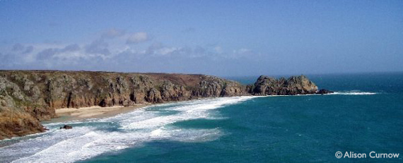
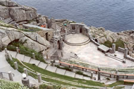
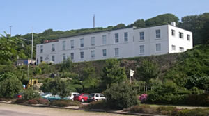

Porthcurno - The Communications Capital of Penwith
- Click here for information on the Minack Theatre, near Porthcurno
Porthcurno (Cornish: Porth Kurnow) is a small village in the parish of St. Levan located in a valley on the south coast, approximately 9 miles to the west of Penzance and about 3 miles from Land's End. Access by road is from the north end of the valley only along a narrow 'unclassified' spur road off the B3283. The road ends at St. Levan church about half a mile further on from the village. There is a public car park at the southern end of the valley for about 200 cars where parking is free out of season. The village is also accessible on foot by the South West Coast Path, being about two hours walk from Land's End or four hours walk from Penzance for fit cliff walkers. There is an occasional but reliable bus service linking Porthcurno with Penzance, Lands End and nearby villages.
The name Porthcurno evolved from the earlier spelling 'Porth Kernow' or 'Porth Curnow'. In Cornish 'Porth-Curnow' meant 'Port (or Bay) of Cornwall'. Today there is no evidence of early commercial port activity.
Porthcurno's Coastline
The cliffs and coastline around Porthcurno are officially designated areas of outstanding natural beauty and widely considered as some of the most visually stunning in the South West. These can be enjoyed by walkers using the many public footpaths in the area. The South West coastal footpath passes through the area often within just a few yards of the cliff tops. Extensive coastal areas are now owned and maintained by the National Trust and the remainder by the local parish council on behalf of Cornwall County Council. The nearby cliffs rise to 60-70m and are formed from a bedrock of prismatic granite

Porthcurno beach, a few hundred yards south of the village is situated in the shelter of the Logan Rock headland just less than one mile to the east. The beach is noted for its coarse sand of broken sea shells, steep shelf and strong rip-currents. Sometimes combinations of wind, tides and sea currents can change the 'sandscape' dramatically in a few hours, but it is unusual for the beach to be completely inundated at high tide. To the east of Porthcurno beach is a small tidal beach called Green Bay. Sometimes this is accessible with caution from Porthcurno beach briefly at low tide.
Another tidal beach called Pedn Vounder lies further to the east between Porthcurno and the Logan Rock headland for which footpath access is by a steep and rugged path leading down from the cliff path. Often a sand-bank forms off Pedn Vounder at low tide. Unlike the nearby fishing coves of Penberth and Porthgwarra, about one and a half miles to the east and west respectively, Porthcurno has no known recent history of commercial fishing activity.
The Logan Rock headland, about 30 minutes' walk from Porthcurno to the east along the coastal footpath on the east side of Porthcurno Bay is famous for the 80 tonne granite rocking stone (Logan Rock) perched at the top of the middle outcrop of rocks on the small rocky peninsula. Millennia of erosion had balanced it so finely that one person could move it easily and visibly. In 1824 a group of sailors led by Lieutenant Goldsmith, nephew of the poet Oliver Goldsmith, climbed up to Logan Rock armed with crowbars and dislodged it, allowing it to fall down the cliff. Such was the disgust of the local people at this blatant act of vandalism, that they complained to the Admiralty and Goldsmith was ordered to replace the rock at his own expense. It took 7 months, 60 labourers and cost Goldsmith £130 at 1824 prices to replace it. It is said that Logan Rock has never really rocked properly since that time. The original invoice for equipment and labour is now displayed on the wall of The Logan Rock public house in the nearby village of Treen.
The natural beauty of the area and its mild climate make the beach and surrounding coastline very popular with tourists throughout the year but especially in the summer months, and they can become very crowded during the school holidays in July and August. The prevailing wind is from the south west and the winters are unusually mild for its latitude because of the influence of the warm Gulf Stream sea current crossing the Atlantic Ocean from warmer seas around the Gulf of Mexico. The local area has some of the highest average annual air temperatures of the United Kingdom.
Porthcurno & Communications
In the late nineteenth century, the remote beach at Porthcurno became internationally famous as the British termination of early submarine telegraph cables, the first of which was landed in 1870, part of an early international link stretching all the way to India, which was then a British colony. In 1872, the Eastern Telegraph Company (ETC) Limited was formed which took over the operation of the cables and built a cable office in the lower valley. The concrete cable hut, where the cable shore ends were connected to their respective land lines, is a preserved building and still stands today at the top of the beach. ETC and its cable operations expanded through the late nineteenth and early twentieth centuries, in 1928 to merge with Marconi's Wireless Telegraph Company Limited to form Imperial and International Communications Limited which was re-named Cable and Wireless Limited in 1934.
In the Inter-War years, the Porthcurno cable office operated as many as 14 cables, for a time becoming the largest submarine cable telegraph station in the World. During the Second World War, Porthcurno was designated a Vulnerable Point and was heavily defended and fortified as a part of British anti-invasion preparations. Defences included pillboxes, a petroleum warfare beach flame barrage.
Porthcurno was a critical communications target and vulnerable to attack during the Second World War so a tunnel was bored into the granite valley side by local tin mining engineers in 1940 to accommodate the essential telegraph equipment. The main entrance was protected by double bomb-proof, gas-proof doors and a covert escape route for staff via a secondary tunnel was incorporated from the back leading to the fields above. The interior was that of a windowless open-plan office constructed as a building shell within the granite void, complete with sloping roof, false ceiling, plastered and decorated walls and drainage for water seepage.
Over the years, many apprentices were trained at the Porthcurno cable office in telegraphy and supporting skills. In 1950 Cable and Wireless opened an engineering college offering courses in branches of telecommunications on the site for employees, secondees and external students. Porthcurno is still recalled today by senior staff at telecommunications offices across the World who were former students here. The cable office closed in 1970, exactly 100 years after the first cable was landed, but the college remained open, eventually closing permanently in 1993. The subsequent demolition of some of the less attractive 70s college buildings, in particular the prison-like block known as 'Howitt House' received popular support. Shortly after the closure the Cable and Wireless Porthcurno Telegraph Museum was opened. This award winning museum, has been widely recommended to tourists, local people and schools in the area, and has also been featured on the BBC TV documentary series What the Victorians Did for Us, presented by the scientist and broadcaster Dr. Adam Hart-Davis. It occupies some of the former college buildings and includes several exhibits which are located in 'The Tunnel'.
images - Alison Curnow, Tony Atkin, Neil Kennedy - Sections of text from wikipedia